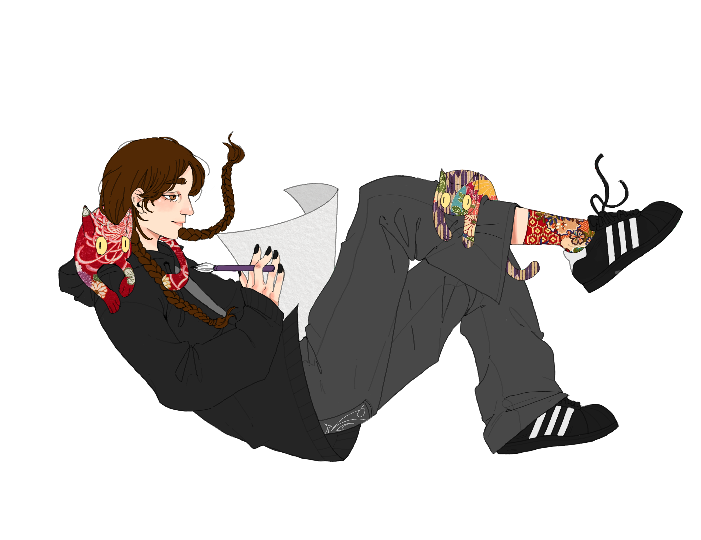

Maud Jeantet Roux
Bonjour!
Je suis Maud Jeantet Roux ! J'étudie en ce moment l'animation 2D à Marseille. Je suis curieuse de découvrir de nouvelles techniques et de nouveaux logiciels. En plus de l'animation 2D, je m'intéresse beaucoup au monde du jeu vidéo et plus particulièrement à la pré-production et le concept art. Je me nourris d'univers postapocalyptiques et futuristes.
Je suis une personne très ouverte et j'adore les chats plus que tout !
